MAC Home : www.sharetechnote.com
I would be almost impossible to explain everything about LTE MAC in a single column without making it a thick book or without making everybody falling in sleep since MAC is the center of all LTE procedure. You would remember that I wrote a long column for RACH procedure, but that complicated procedure is just a small portion of LTE MAC procedure.
In this column, I would focus only on MAC overview and MAC PDU structure for SCH (data transmission and reception) and the other part of the MAC will be dealt in separate columns.
- MAC Structure Overview
- MAC PDU Structure for SCH
- MAC CE (MAC Control Element)
- Backoff Indicator
- Examples for Good MAC PDU
- Downlink
- 03(DL-SCH : LCID = 3, NO PADDING)
- 1C(DL-SCH : Contention Resolution Only)
- 3C 20 12 1F (DL-SCH : Contention Resolution, CCCH, PADDING)
- Uplink
- 03 45(UL-SCH : NO BSR, LCID = 3, NO PADDING)
- 20 06 1F(UL-SCH :NO BSR, UL CCCH,PADDING)
- 23 3C 1F(UL-SCH : NO BSR, LCID = 3,PADDING)
- 3D 21 09 22 11 1F(UL-SCH : Short BSR, LCID = 1 & 2)
- 3D 22 17 1F(UL-SCH : Short BSR, LCID = 2,PADDING)
- 3D 21 27 1F(UL-SCH : Short BSR, LCID = 1,PADDING)
- 3E 21 09 1F(UL-SCH : Long BSR, LCID = 1,PADDING)
- Examples for Bad MAC PDU
- DRX (Discontinous Reception)
Let's start with overall MAC procedure. It is always good to use an illustration/diagram to give a big picture of anything.. but ironically it would be easily overlooked if we present something in diagram. So my recommendation is to try to convert the illustration into a verbal description and to convert a verbal description into a form of illustration. At least this kind of conversion process has helped me a lot.
Let's start this conversion with the following diagram from 36.321. You may have seen this from too many different LTE training material.. and overlooked it almost every time -:).
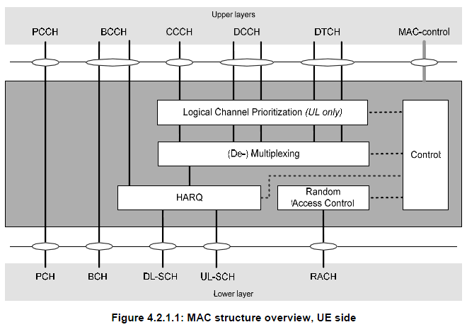
Let's just try to "read" (not "see") this illustration. I read as follows.
i) All the logical channes (PCCH, BCCH, CCCH, DCCH, DTCH) goes through MAC layer. (too simple reading ? -:)
ii) It seems that PCCH does not get manipulated by MAC in any special way. It just looks as if it is by passing MAC process. It does not use HARQ procedure meaning 'no retransmission' mechanism being used.
iii) CCCH, DCCH, DTCH all go through the same procedure (Prioritization, Mux/DeMux, HARQ).
iv) Some BCCH goes through HARQ, but some BCCH does not go through HARQ. Do you know which BCCH go through HARQ and which does not ? BCCH for MIB does not go through HARQ, but BCCH for SIB go through HARQ. (But this HARQ is a little different from normal HARQ that we know of.. It does not expecting any ACK/NACK response from the reciever.. but perform 'retransmission' based on a predefined rule).
v) Random Access process orignated within MAC layer, it does not have the correspoding logical channel. (This may apply to Msg1, Msg2 of RACH procedure.. Msg3,4,5 involves RRC layer intervention as well).
Let's read another important illustration from 36.321.
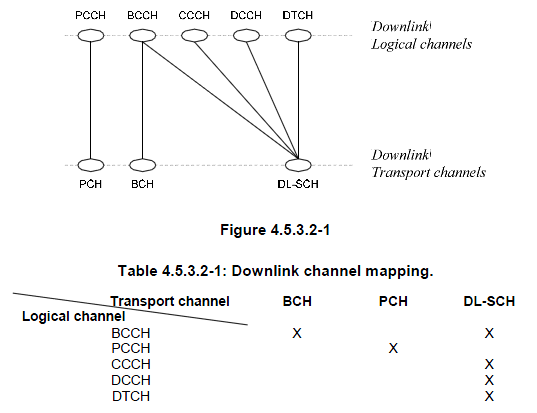
I read as follows :
i) PCCH (Logical Channel) is mapped only to PCH (Transport channel).
ii) DL-CCCH, DCCH, DTCH are all mapped to DL-SCH.
iii) Some BCCH is mapped to BCH and Some BCCH is mapped to DL-SCH. Do you know which one is which ? BCCH for MIB is mapped to BCCH and BCCH for SIB is mapped to DL-SCH.
Let's do similar reading for Uplink channels as well.
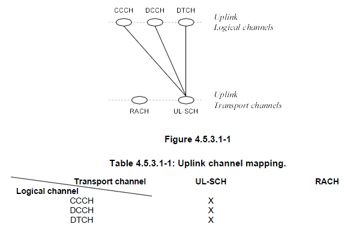
i) No BCCH, PCCH on Uplink path. (BCCH, PCCH is downlink only channels).
ii) UL CCCH, DCCH, DTCH are all mapped to UL-SCH.
iii) There is a special channel called 'RACH', but this does not have any corresponding logical channel.
Try this kind of 'reading' whenever you see any diagram.. very simple but it would really help.
Then try to correlate each messages in the call flow with the channel mapping. And the try to correlate this mapping with the diagrams described above. Ask a couple of questions to yourself, e.g which of these message use HARQ ? Which message is carried by a 'Common' channel and which messages are carried by a 'Dedicated' channel.
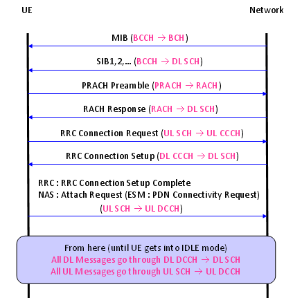
Probably you would come across many cases where you have to analyze/manipulate this MAC PDU structure while you are doing troubleshooting or implementing the protocol stack.
For this, you have to refer to the following two sets of diagram at the same time. There would be many cases where you see a diagram and scratch your head trying to figure out the real meaning of the illustration. And then you will get the insight after you see another diagram.. and it would be after you spend a long time, a couple of weeks.. or several month .. even years.. asking "What the heck does this mean ?"
So my first tip to understand a diagram is "try to find another diagrams to help you to understand the one you now have".
Another tip is "get a real data (e.g, real data from UE or Network trace log) and try to analyze by hand according to the diagram". A lot of diagrams.. you should be able to pick proper diagrams to interpret a MAC header depending on the situation.
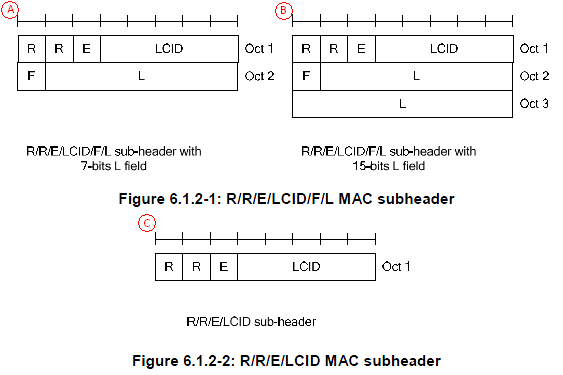
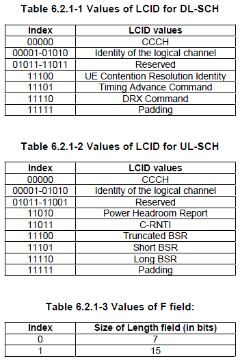
When you have BSR (Long BSR, Short BSR), you will have some additional information structured as follows :

Sometimes one MAC PDU (MAC output) is made up of multiple chunks(MAC SDU = MAC Inputs) concatenated as follows;
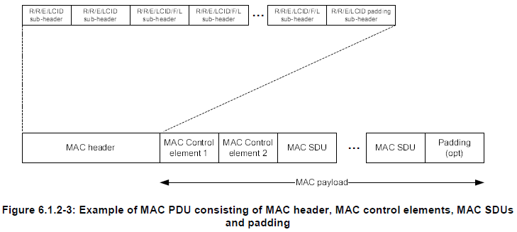
Let's understand the small keywords shown on the diagram. 36.321 6.2.1 MAC header for DL-SCH and UL-SCH has pretty good description.
i) R : R means 'Reserved", meaning that it does not have any special meaning for now. It is always set to be '0' for now.
ii) E : E means "Extension". This is set to '0' when the PDU marked as 'C' is used. If E is '1', 'A' or 'B' type of structure is used.
iii) LCID : LCID stands for "Logical Channel ID", meaning Logical Channel Number.
iv) F : F means 'Format'. This defines the length of 'L' field. If F is '0', the length of L field is 7 bit and if F is '1', the length of L field is 15 bit.
v) L : L means 'Length'. It shows the length of the MAC PDU. (Note that some MAC header, marked in 'C' does not have 'L' field. Then how can I know the length of MAC PDU, ie size of MAC PDU ? If there is no 'L' field, the size of MAC PDU is automatically set to be the same size of TBS(transport block size) in Byte unit.
Refer to MAC CE in Quick Reference
Refer to Backoff Indicator in Quick Reference
Now all these in mind, let's try with my second tip saying "try to anlayze real data by hand". I have the following MAC PDU from my equipment trace log ..
UL-SCH : 03 45 00 00 3C 33 63 00 00 80 01 00 00 00 00 ....
The first step is to analyze the first byte. For this, let me convert the first byte into binary format as follows :
03 = 00000011
Let's rearrange these bits according to MAC PDU diagram as follows : (Bit number start from MSB meaning "start from left")
* Bit 0 = R field = 0
* Bit 1 = R field = 0
* Bit 2 = E field = 0. This means that this header does not have any 'Extension' and it means the this MAC PDU has the structure marked as 'C' (Figure 6.1.2-2)
* Bit 3~7 = LCID field = 11 in Binary = 3 in decimal. This means the logical channel number for this PDU is '3'.
This is the end of analysis. All the remaining part is user data.
Now let's try with another data as follows :
UL-SCH : 20 06 1F 5F 09 72 43 FE 56 00 00 00 00 ......
In the same way as above, let's try with the first byte, 20.
20 = 00100000
* Bit 0 = R field = 0
* Bit 1 = R field = 0
* Bit 2 = E field = 1. This means that this header does have some 'Extension' and it means the this MAC PDU has the structure marked as 'A' or 'B' (Figure 6.1.2-1). Then which one is the right one. A ? or B ? The answer comes later. Now the important thing is that you have to decode the second Byte as well since 'E' field is '1'.
* Bit 3~7 = LCID field = 00000 in Binary. This means the logical channel number for this PDU is '00000' which is for UL CCCH (Refer to LCID Field for the meaning of this LCID field).
Since 'E' field is set to '1'. We have to decode the second Byte as well.
06 = 00000110
Bit number continues from from the first byte.
* Bit 8 (bit 0 of the Oct 2) = F field = 0. This means that the size of L field is 7 bit.
* Bit 9~15 (bit 1~bit 7 of the Oct 2)= L field = 0111100 = 06. This means the size of user data in this MAC PDU is 6 byte.
This is the end of second byte analysis. Is this all ? No.. when you have 'E' field to be '1'. You have to continue to decoding the header until you see the end.
Let's continue this analysis to the third byte, 1F as follows :
1F = 00011111
Process start from the begining because we know the first and second byte completes a complete header and I will restart the bit number as well.
* Bit 0 = R field = 0
* Bit 1 = R field = 0
* Bit 2 = E field = 0. It means that it does not have any 'extension'. It does not have any additional header. It means that this is the last header.
* Bit 3~7 = LCID = 11111. What does this mean ? If you see the table 6.2.1-1, 6.2.1-2.. this means 'MAC' padding. It means that this MAC PDU has MAC PDU after the user data. Then exactly which part is the padding and which part is the real user data. If you remember the first/second byte analysis, you should remember the size of real user data is 60 bytes. This, in turn, means that the data after the initial 60 bytes are the MAC padding.
Now let's try with another data as follows :
UL-SCH : 23 3C 1F 45 00 00 3C 33 63 00 00 80 01 00 00 00 00 ......
In the same way as above, let's try with the first byte, 23.
23 = 00100011
* Bit 0 = R field = 0
* Bit 1 = R field = 0
* Bit 2 = E field = 1. This means that this header does have some 'Extension' and it means the this MAC PDU has the structure marked as 'A' or 'B' (Figure 6.1.2-1). Then which one is the right one. A ? or B ? The answer comes later. Now the important thing is that you have to decode the second Byte as well since 'E' field is '1'.
* Bit 3~7 = LCID field = 11 in Binary = 3 in decimal. This means the logical channel number for this PDU is '3'.
Since 'E' field is set to '1'. We have to decode the second Byte as well.
3C = 00111100
Bit number continues from from the first byte.
* Bit 8 (bit 0 of the Oct 2) = F field = 0. This means that the size of L field is 7 bit.
* Bit 9~15 (bit 1~bit 7 of the Oct 2) = L field = 0111100 = 60. This means the size of user data in this MAC PDU is 60 byte.
This is the end of second byte analysis. Is this all ? No.. when you have 'E' field to be '1'. You have to continue to decoding the header until you see the end.
Let's continue this analysis to the third byte, 1F as follows :
1F = 00011111
Process start from the begining because we know the first and second byte completes a complete header and I will restart the bit number as well.
* Bit 0 = R field = 0
* Bit 1 = R field = 0
* Bit 2 = E field = 0. It means that it does not have any 'extension'. It does not have any additional header. It means that this is the last header.
* Bit 3~7 = LCID = 11111. What does this mean ? If you see the table 6.2.1-1, 6.2.1-2.. this means 'MAC' padding. It means that this MAC PDU has MAC PDU after the user data. Then exactly which part is the padding and which part is the real user data. If you remember the first/second byte analysis, you should remember the size of real user data is 60 bytes. This, in turn, means that the data after the initial 60 bytes are the MAC padding.
Now let's try with another data as follows : (This time you will see the MAC header is a little bit longer than previous ones. How do I know the MAC header is long ? Big hint is that I count the number of bytes from the start until I hit 1F which is 4 bytes in this case. MAC header does not always end with 1F, but in most case it would be the case)
UL-SCH : 3E 21 09 1F 00 00 00 A0 01 01 48 00 60 EB 82 80 00 00 00 00 00 00 00 00 00 00 00 00..
3E = 00111110
R = 0
R = 0
E = 1
LCID = 11110 = Long BSR
21 = 00100001 (LCID is not 1F, not special channel.. it is proper logical channel number.. so the following one or two bytes is part of the same subheader)
R = 0
R = 0
E = 1
LCID = 00001 = Logical Channel #1
09 = 00001001
F = 0
L = 00001001 = 9 Bytes (size of the first SDU. Be careful this is not PDU size)
1F = 00011111
R = 0
R = 0
E = 0
LCID = 11111 = Padding
Long BSR = 00 00 00
Now let's reorganize the above analysis according to the fig 6.1.2-3.
[Subheader #1]
3E = 00111110
R = 0
R = 0
E = 1
LCID = 11110 = Long BSR
[Subheader #2]
21 09 = 00100001 00001001
R = 0
R = 0
E = 1
LCID = 00001 = Logical Channel #1
F = 0
L = 00001001 = 9 Bytes (size of the first SDU. Be careful this is not PDU size)
[Subheader #3]
1F = 00011111
R = 0
R = 0
E = 0
LCID = 11111 = Padding
[MAC Control element #1]
Long BSR = 00 00 00
[MAC SDU #1]
= 9 bytes
= A0 01 01 48 00 60 EB 82 80
[Padding]
= 00 00 00 00 00 ...
Now let's analyze another MAC data. I will summerize the analysis in a little bit short format. If you have difficulties understanding this analysis, try reading < Example 3 > again.
UL-SCH : 3D 21 27 1F 00 A0 00 00 20 20 00 00 00 26 07 41 01 0B F6 00 00 00 00 00 00 00 00 00 00 02 E0 60 00 05 02 01 D0 11 D0 19 00 00 02 52 00 00 00 00 00 5C 08 02 00 00 00 00 ...
[The detail of MAC header]
3D : MAC subheader #1 ( Short BSR )
R = 0
R = 0
E = 1
LCID = 11101 = Short BSR
21 27 : MAC subheader #2 ( Logical Channel #1 )
R = 0
R = 0
E = 1
LCID = 00001 = Logical Channel #1
F = 0
L = 0100111 = 47 Bytes
1F : MAC subheader #3 ( Padding )
R = 0
R = 0
E = 0
LCID = 11111 = Padding
[MAC Control element #1]
Short BSR = 00
[MAC SDU #1]
= 47 bytes
= A0 00 00 20 20 00 00 00 26 07 41 01 0B F6 00 00 00 00 00 00 00 00 00 00 02 E0 60 00 05 02 01 D0 11 D0 19 00 00 02 52 00 00 00 00 00 5C 08 02
[Padding]
= 00 00 00 00 00 ...
This would be a special example which shows you that multiple MAC SDU are combined into a single MAC PDU. This example came from the signaling message "RRC Connection Reconfiguration + Attach Complete".
UL-SCH : 3D 21 09 22 11 1F 00 A0 04 04 10 00 40 EB C0 14 A0 00 00 48 00 E0 E8 60 00 6A 40 18 40 00 00 00 00 00 00 00 00 00 00 00 00...
3D : MAC subheader #1 ( Short BSR )
R = 0
R = 0
E = 1
LCID = 11101 = Short BSR
21 09 : MAC subheader #2 ( Logical Channel #1 )
R = 0
R = 0
E = 1
LCID = 00001 = Logical Channel #1
F = 0
L = 0001001 = 9 Bytes
22 11 : MAC subheader #3 ( Logical Channel #2 )
R = 0
R = 0
E = 1
LCID = 00010 = Logical Channel #2
F = 0
L = 0010001 = 17 Bytes
1F : MAC subheader #3 ( Padding )
R = 0
R = 0
E = 0
LCID = 11111 = Padding
[MAC Control element #1]
Short BSR = 00
[MAC SDU #1]
= 9 bytes
= A0 04 04 10 00 40 EB C0 14
[MAC SDU #1]
= 17 bytes
= A0 00 00 48 00 E0 E8 60 00 6A 40 18 40 00 00 00 00
[Padding]
= 00 00 00 00 00 ...
Let me give you another example. This is a MAC data for an IP packet going through DTCH.
DL-SCH : 03 18 04 50 9A C2 BC 25 C2 F0 BB 0B A0 B6 82 F0 9A 50 97 09 70 BC 26 94 2F 0A B0 BA 0B C2 F0 BC 2F 09 3A 09 27 09 A5 0B C2 69 42 DA 09 70 AE 82 4E 82 DA 0A B0 B7 0B 50 BC 2B A0 9A 4C 2D 42 75 0A B0 BC 2E C2 4D 42 F0 BC 2F 09 70 BC 26 94 2F 09 70 BC 25 C2 BC 2A 4C 2F 0A B0 BC 2F 0B 68 2F 0A B0 AB 09 A5 0B C2 DA 0B C2 F0 BC 2E C2 D4 2F 0B C2 AC 2A C2 47 00 44 14 F0 B6 82 F0 BC 25 C2 BA 0A B0 BC 2F 0B C2 5C 2D A0 BC 2F 0B A0 BC 2F 0B 68 2D A0 BC 26 94 24 E8 25 C2 F0 BC 2F 0A E8 25 C2 F0 BC 2D A0 B5 0B C2 F0 BC 2F 0B C2 5C 2D 42 F0 9D 30 BC 2E C2 D4 2F 0B C2 F0 BC 2E C2 D4 25 C2 69 42 F0 BC 2F 0B C2 F0 9A 50 BC 2F 0A B0 BC 2A C2 F0 BC 2F 0B C2 F0 AB 09 A5 0B 68 2F 0B C2
03 : MAC Header
R = 0
R = 0
E = 0
LCID = 3
This one has only one byte MAC header and it has only LCID and no other information. Then how do you know the size of the data ? This header does not have any size information. It means that all the data except the header part is a single SDU.
< Example 8 > Contention Resolution PDU
Following is one example of Contention Resolution message during the initial registration.
DL-SCH : 1C 50 00 00 00 00 07
1C : MAC Header
R = 0
R = 0
E = 0
LCID = 11100 = 1C = It means "This is MAC Header for Contention Resolution".
Since length of Contention Resolution is fixed to be 6 bytes (Refer to 36.321 6.1.3.4). This MAC header does not need to contain any additional F/L field. But there is one thing you have to care about. If the TBS size you allocated for PHY layer is exactly 56 bits, this is good enough. But if the TBS size is greater than 56, you have to add 'Padding' subheader, meaning the header should be like 3C 1F and the whole MAC PDU would be like 50 00 00 00 00 07 00 00 ..
[MAC SDU]
= 6 bytes
= 50 00 00 00 00 07
3D 22 17 1F 00 A0 00 00 48 01 A4 E0 00 00 00 00 20 E8 60 00 6A 40 18 40 00 00 00 00 00 00 00 00 00
3D : MAC subheader #1 ( Short BSR )
R = 0
R = 0
E = 1
LCID = 11101 = Short BSR
22 17 : MAC subheader #2
R = 0
R = 0
E = 1
LCID = 00010 = 2
F = 0
L = 010111 = 23 Bytes
1F : MAC subheader #3 ( Padding )
R = 0
R = 0
E = 0
LCID = 11111 = Padding
[MAC Control element #1]
Short BSR = 00
[MAC SDU #1]
= 23 bytes
= A0 00 00 48 01 A4 E0 00 00 00 00 20 E8 60 00 6A 40 18 40 00 00 00 00
This would be a special example which shows you that multiple MAC SDU are combined into a single MAC PDU. This example came from the signaling message "MAC Contention Resolution + RRC Connection Setup".
DL-SCH : 3C 20 12 1F 00 40 10 00 00 00 60 12 9B 3E 86 0F B5 79 E8 96 6C 30 64 99 60 2C 78 00 00 ...
3C : MAC subheader #1 ( Contention Resolution )
R = 0
R = 0
E = 1
LCID = 11100 = UE Contention Resolution Identity
20 12 : MAC subheader #2 ( CCCH )
R = 0
R = 0
E = 1
LCID = 00000 = CCCH
F = 0
L = 0010010 = 18 Bytes
1F : MAC subheader #3 ( Padding )
R = 0
R = 0
E = 0
LCID = 11111 = Padding
[MAC Control element #1]
UE Contention Resolution Identity = 00 40 10 00 00 00 (6 Bytes fixed)
[MAC SDU #1]
= 18 bytes
= 60 12 9B 3E 86 0F B5 79 E8 96 6C 30 64 99 60 2C 78 00
[Padding]
= 00 ...
Now let's go through some example of bad cases. In some way, the examples of bad cases would give you more help for troubleshooting.
< Example 1 : Bad Case >
UL-SCH : 3E 1F 00 00 00 A0 01 01 48 00 60 EB 82 80 07 41 01 0B 00 00 00 00..
[Subheader #1]
3E = 00111110
R = 0
R = 0
E = 1
LCID = 11110 = Long BSR
[Subheader #2]
1F = 00011111
R = 0
R = 0
E = 0
LCID = 11111 = Padding
[MAC Control element #1]
Long BSR = 00 00 00
You see that there no subheader for normal MAC data (MAC SDU). In this case, all the payload (A0 01 01 48 00 60 EB 82 80 07 41 01 0B) coming after Long BSR is regarded as a MAC padding. So they are discarded and does not go up to higher layer.
< Example 2 : Bad Case >
This case may or may not cause any problem depending on higher layer implementation on network side. But I take this as a bad case
UL-SCH : 3D 21 33 1F 00 A0 00 00 20 20 00 00 00 26 07 41 01 0B F6 00 00 00 00 00 00 00 00 00 00 02 E0 60 00 05 02 01 D0 11 D0 19 00 00 02 52 00 00 00 00 00 5C 08 02 00 00 00 00 00 00 ..
Following is the analysis of the header part
3D : MAC subheader #1 ( Short BSR )
R = 0
R = 0
E = 1
LCID = 11110 = Long BSR
21 33 : MAC subheader #2 ( Logical Channel #1 )
R = 0
R = 0
E = 1
LCID = 00001 = Logical Channel #1
F = 0
L = 0110011 = 51 Bytes (This seems to be MAC PDU size, not SDU size.. this value MAY cause some problem)
1F : MAC subheader #3 ( Padding )
R = 0
R = 0
E = 0
LCID = 11111 = Padding
00 : MAC Control Element #1(Short BSR)
MAC SDU #1 (51 Bytes)
= A0 00 00 20 20 00 00 00 26 07 41 01 0B F6 00 00 00 00 00 00 00 00 00 00 02 E0 60 00 05 02 01 D0 11 D0 19 00 00 02 52 00 00 00 00 00 5C 08 02 00 00 00 00 00
In this case, there would be no problem for the MAC Data (PDU) to go through to the higher layer, but it carries 5 additional trailing 0s. If the higher layer (RRC/NAS) on Network side can properly ignore (chop off) these trailing bytes there would be no problem, but the higher layer complain about this, this incorrect SDU size would cause problem.
In normal operation, UE has to be awake all the time and monitor PDCCH for every subframe meaning that it has to be awake all the time since it doesn't know exactly when the network will transmit the data for it. Logically there is no problem with this, but there would be a practical problem. It is power consumption issue on UE side. If UE is always up even when there is no data being transmitted to it from the network, it would be wasting the energy.
Then what would be the solution to save the energy on UE side. There may be several ways, but one of the most common way is to use DRX. DRX is a mechanism in which UE gets into sleep mode for a certain period of time and wake up for another period of time.
It sounds good. Then you may have a question. How can we synchronize UE-wakeup timing with Network transmission timing for the UE. If these two timing does not match, there can be a worst case where UE is awake but Network does not transmit anything or Network transmit something for the UE but UE is in sleep mode. One solution would be that Network decide when to let UE sleep and when to wake it up and inform the timing to the UE using a RRC message. In reality, Network informs UE of this timing using RRC ConnectionReconfiguration or RRC Connection Setup as follows (Following is the example configuration from RRC ConnectionReconfiguration, but you can do the samething in RRC Connection Setup as well).
+-c1 ::= CHOICE [rrcConnectionReconfiguration]
+-rrcConnectionReconfiguration ::= SEQUENCE
+-rrc-TransactionIdentifier ::= INTEGER (0..3) [0]
+-criticalExtensions ::= CHOICE [c1]
+-c1 ::= CHOICE [rrcConnectionReconfiguration-r8]
+-rrcConnectionReconfiguration-r8 ::= SEQUENCE [001100]
+-measConfig ::= SEQUENCE OPTIONAL:Omit
+-mobilityControlInfo ::= SEQUENCE OPTIONAL:Omit
+-dedicatedInfoNASList ::= SEQUENCE OF SIZE(1..maxDRB[11]) [1] OPTIONAL:Exist
| +-DedicatedInfoNAS ::= OCTET STRING SIZE(ALIGNED)[...]
+-radioResourceConfigDedicated ::= SEQUENCE [110101] OPTIONAL:Exist
| +-srb-ToAddModList ::= SEQUENCE OF SIZE(1..2) [1] OPTIONAL:Exist
| +-drb-ToAddModList ::= SEQUENCE OF SIZE(1..maxDRB[11]) [1] OPTIONAL:Exist
| +-drb-ToReleaseList ::= SEQUENCE OF OPTIONAL:Omit
| +-mac-MainConfig ::= CHOICE [explicitValue] OPTIONAL:Exist
| | +-explicitValue ::= SEQUENCE [111]
| | +-ul-SCH-Config ::= SEQUENCE [11] OPTIONAL:Exist
| | +-drx-Config ::= CHOICE [setup] OPTIONAL:Exist
| | | +-setup ::= SEQUENCE [1]
| | | +-onDurationTimer ::= ENUMERATED [psf1]
| | | +-drx-InactivityTimer ::= ENUMERATED [psf1]
| | | +-drx-RetransmissionTimer ::= ENUMERATED [psf1]
| | | +-longDRX-CycleStartOffset ::= CHOICE [sf10]
| | | | +-sf10 ::= INTEGER (0..9) [0]
| | | +-shortDRX ::= SEQUENCE OPTIONAL:Exist
| | | +-shortDRX-Cycle ::= ENUMERATED [sf2]
| | | +-drxShortCycleTimer ::= INTEGER (1..16) [1]
| | +-timeAlignmentTimerDedicated ::= ENUMERATED [infinity]
| | +-phr-Config ::= CHOICE [setup] OPTIONAL:Exist
| +-sps-Config ::= SEQUENCE OPTIONAL:Omit
| +-physicalConfigDedicated ::= SEQUENCE [0000110010] OPTIONAL:Exist
+-securityConfigHO ::= SEQUENCE OPTIONAL:Omit
+-nonCriticalExtension ::= SEQUENCE OPTIONAL:Omit
Following table shows the meaning of each DRX parameters.
|
DRX Parameter |
Description |
|
DRX Cycle |
The duration of one 'ON time' + one 'OFF time'. (This value does not explicitely specified in RRC messages. This is calculated by the subframe time and longdrx-CycleStartOffset) |
|
onDurationTimer |
The duration of 'ON time' within one DRX cycle |
|
drx-Inactivity timer |
Specify how long UE should remain 'ON' after the reception of a PDCCH. When this timer is on UE remains in 'ON state' which may extend UE ON period into the period which is 'OFF' period otherwise. (See the figure for < case 2 > below) |
|
drx-Retransmission timer |
Specifies the maximum number of consecutive PDCCH subframes the UE should remain active to wait an incoming retransmission after the first available retransmission time |
|
shortDRX-Cycle |
DRX cycle which can be implemented within the 'OFF' period of a long DRX Cycle.(See the figure for < case 4 > below) |
|
drxShortCycleTimer |
The consecutive number of subframes the UE shall follow the short DRX cycle after the DRX Inactivity Timer has expired(See the figure for < case 4 > below) |
Before we go into further detail, let me give you a couple of figures that would help your understanding.
< Case 1 > : Only Long DRX Cycle is configured and No PDCCH is received during the cycle.
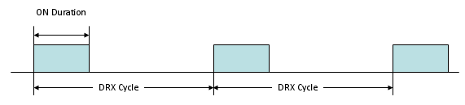
< Case 2 > : Only Long DRX Cycle is configured and a PDCCH is received during a cycle (You will notice the real 'ON time' May get extended depending on DRX Inactivity Timer and when the PDCCH is recieved as shown in thick Blue line).
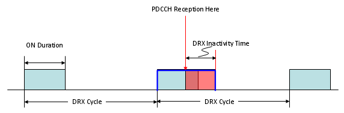
< Case 3 > : Only Long DRX Cycle is configured and a PDCCH and DRX Command MAC CE are received during a cycle (You will notice the real 'ON time' MAY get shorter depending on exactly when DRX Command MAC CE is received as shown in thick Blue line).
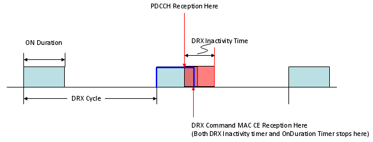
< Case 4 > : Both Long DRX Cycle and Short DRX Cycle are configured and No PDCCH is received during the cycle.
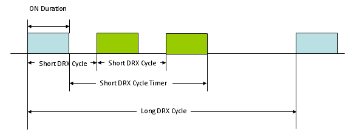
Let me give you a couple of question ?
i) What would be the best period for sleeping and wake-up period ?
ii) What kind of problem would happen if sleeping time is too short whereas wake-up time is very long ?
iii) What kind of problem would happen if sleeping time is too long whereas wake-up time is very short ?
There would be no best answer for the question i). The answer will be different depending on situation.
The answer to question ii) would be that you would not save much energy on UE side since UE is awake most of the time.
The answer to question iii) would be that you would save much energy on UE side but there may be longer delay for data reception when network wants to send some data.
Now let's get into further details on exactly what happens on UE side when this DRX is working. This is very complicated process especially if both long DRX cycle and short DRX cycle are configured. Don't try to understand all the details at once. Just try to go through this process as often as possible. Try to understand only one if() statement at once.
if(drx-Config == setup) {
if((Short DRX Cycle is configured/activated)
&& ( [(SFN * 10) + subframe number] mod (shortDRX_Cycle) == (drxStartOffset) mod (shortDRX_Cycle)) {
start onDurationTimer;
}
if((Long DRX Cycle is configured/activated)
&& ( [(SFN * 10) + subframe number] mod (longDRX_Cycle) == (drxStartOffset) ) {
start onDurationTimer;
}
if( (a HARQ RTT Timer expires in this subframe)
&& (the data in the soft buffer of the corresponding HARQ process was not successfully decoded) {
start the drx-RetransmissionTimer for the corresponding HARQ process;
}
if( DRX Command MAC control element is received ) {
stop onDurationTimer;
stop drx-InactivityTimer;
}
if( (drx-InactivityTimer expires)
|| (DRX Command MAC control element is received in this subframe) {
if (the Short DRX cycle is configured ) {
start or restart drxShortCycleTimer;
use the Short DRX Cycle;
} else {
use the Long DRX cycle;
}
}
if( drxShortCycleTimer expires in this subframe ) {
use the Long DRX cycle;
}
if( during the Active Time, for a PDCCH-subframe,
if the subframe is not required for uplink transmission for halfduplex FDD UE operation and
if the subframe is not part of a configured measurement gap) {
monitor the PDCCH;
if (PDCCH indicates a DL transmission || DL assignment has been configured for this subframe ) {
start the HARQ RTT Timer for the corresponding HARQ process;
stop the drx-RetransmissionTimer for the corresponding HARQ process;
}
if (the PDCCH indicates a new transmission (DL or UL) ) {
start or restart drx-InactivityTimer;
}
}
if( not in the Active Time) {
CQI/PMI/RI on PUCCH and SRS shall not be reported;
}
}
The DRX parameters that I used are as follows. As you see, only Long DRX is configured in this example and I didn't enable the short DRX for simplicity.
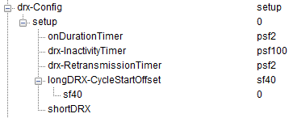
Click here to download the analysis file.
Overall procedure that I applied is as follows.
i) < Persistant Scheduling for both DL/UL >
ii) RRC Connection Reconfiguration (Notifies the DRX configuration to UE)
iii) Configure DRX parameters on Network simulator side
iv) Receive RRC Connection Reconfiguration Complete
v) Stop transmit PDCCH (DCI 0/DCI 1) from here to all the way to the end.
You may see from the spreadsheet that was linked above that the DRX ON does not start right away after step ii). It is because we still need to send PDCCH for step iv).
Just open up the spreadsheet linked above and follow through each row and at every row ask your self "Why this should DRX ON ?" or "Why this should be DRX OFF". This is the only way you can understand the DRX mechanism in full detail.
This example is the simplest case. so you have to make it sure to understand at least this example. I will keep adding examples with various complexity.